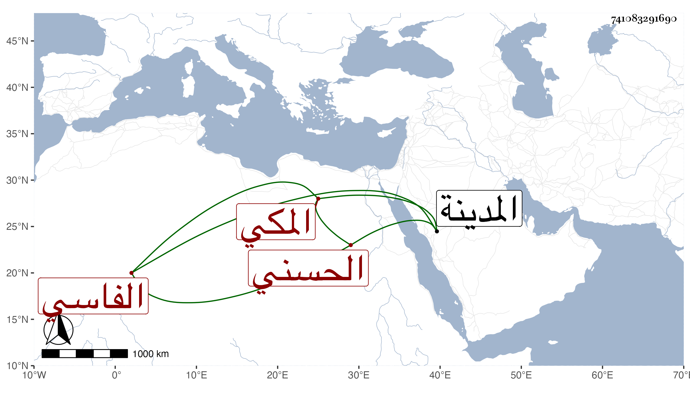

0902Sakhawi.DawLamic.ITO20230111-ara1.EIS1600.741083291690
Biography ID: 741083291690
386
سعادة ابنة عبد اللطيف بن محمد بن أحمد بن أبي عبد الله الحسني الفاسي المكي ؛ أجاز لها في سنة أربع وخمسين من اجاز لستيت ابنة عبد الله بن أبي السرور الفاسي وتزوجها الخواجا حسين بن قاوان ، وماتت تحته في صفر سنة اثنتين وثمانين بالمدينة النبوية .
